Descrição
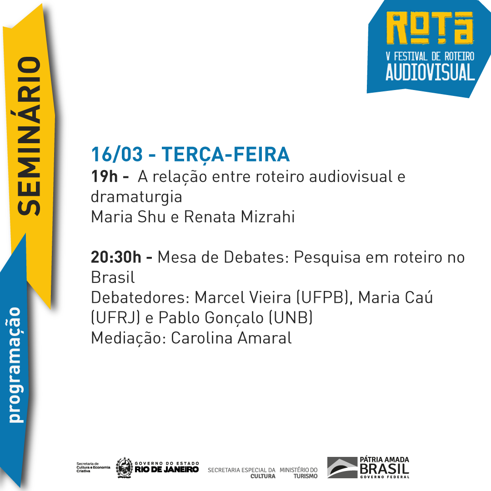
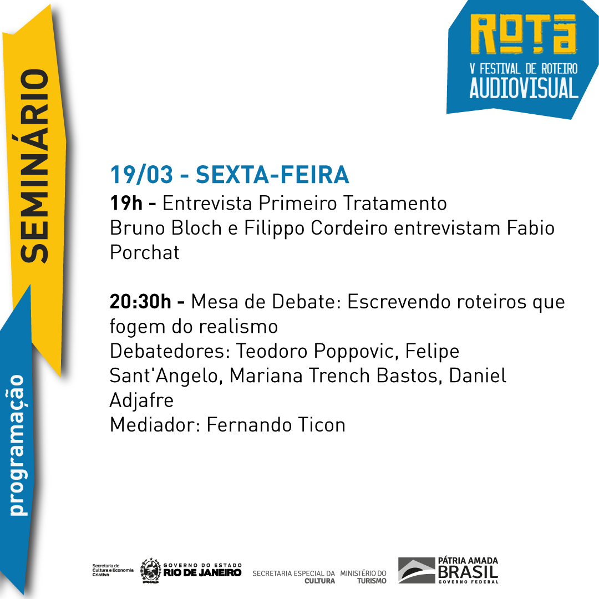
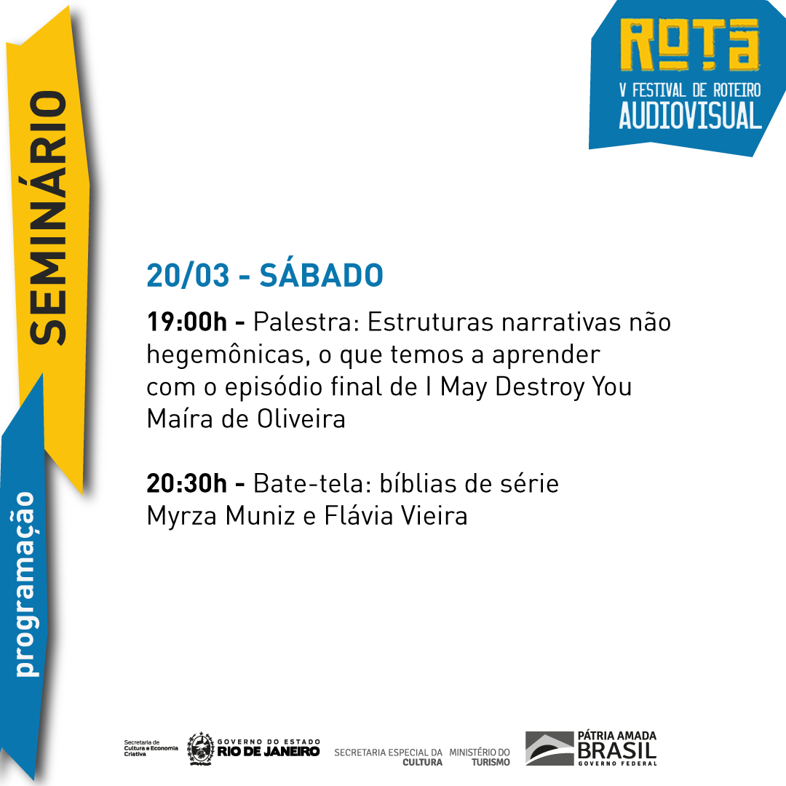
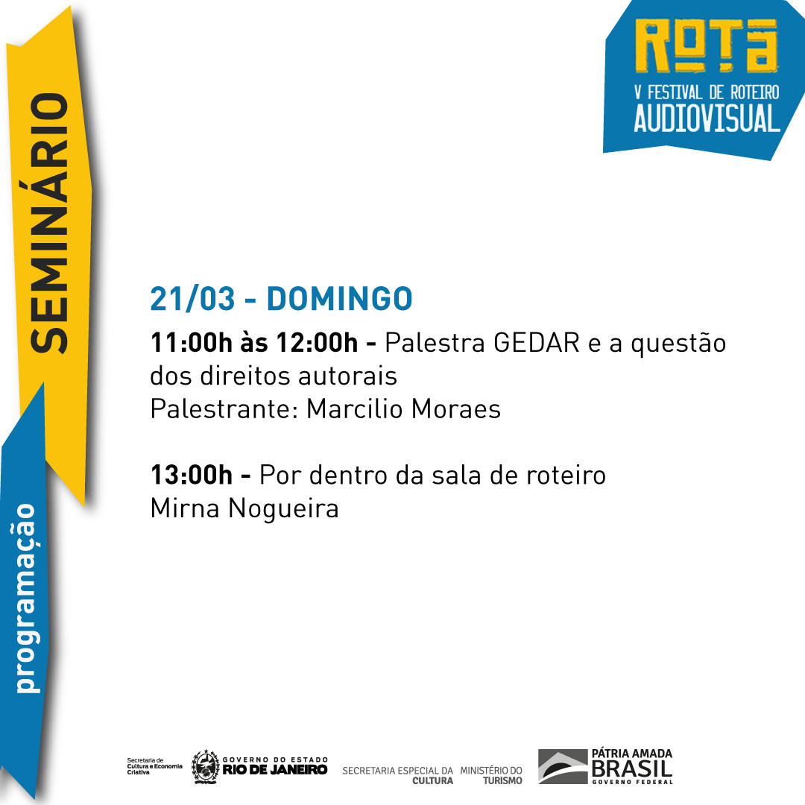
A programação do Seminário, que acontecerá entre os dias 16 e 20 de março de 2021, em dois horários, 19h e 20h:30, inclui uma masterclass, palestras, mesas de debate e uma entrevista com um roteirista convidado.
A participação do público será gratuita, porém, condicionada à inscrição feita em cada evento do Seminário, no site.
A data de abertura das inscrições e a programação completa do Seminário serão divulgadas em breve.
Dúvidas e sugestões? Envie email para rotaseminario2021@gmail.com.
Convidados
-
BRUNO BLOCH
Convidado
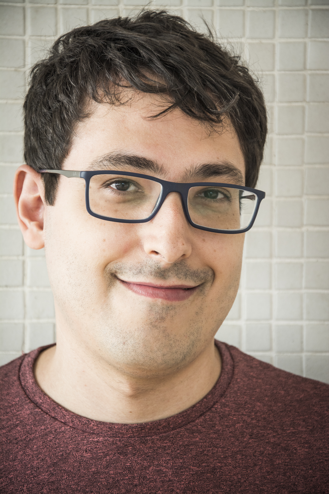 Roteirista e produtor do longa "B.O.", indicado ao prêmio ABRA 2020 na categoria "melhor roteiro de longa de comédia", premiado no Los Angeles Brazilian Film Festival 2018 e no Festival FICA.VC 2017. Roteirista do longa "Tamo Junto", exibido no Festival de Cinema de Gramado de 2016. Para TV, foi cocriador e roteirista, ao lado de Matheus Souza, da série Vendemos Cadeiras (2010), exibida no canal Multishow. Criou e escreveu a websérie Voluntários 343, indicada a 3 prêmios no Rio Webfest 2017, incluindo “melhor série brasileira” e assinou o texto da peça O Diabo Não Pode Ser POP (2016). É idealizador e coapresentador do podcast de entrevista com roteiristas Primeiro Tratamento, maior podcast sobre roteiro do Brasil, onde atua também como consultor de roteiros.
-
CARLA FAOUR
Convidada
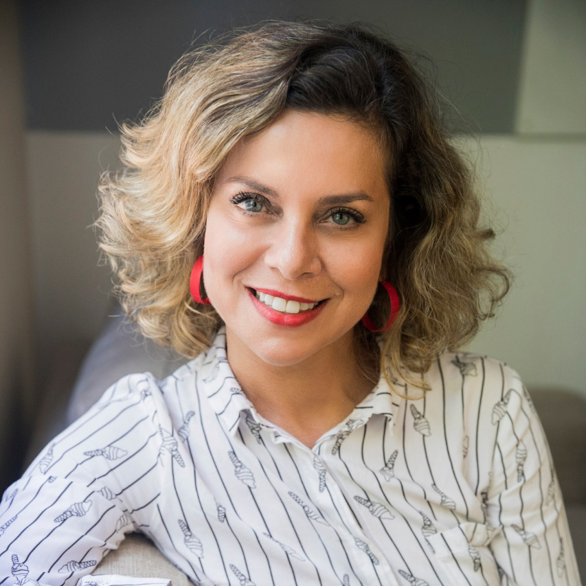 CARLA FAOUR - criadora e roteirista da série “Segunda Chamada”, vencedora dos Prêmios APCA e ABRA de Melhor Série 2019. Também foi roteirista do seriado Tapas e Beijos, da novela Além do Horizonte e Malhação - Seu lugar no Mundo. Escreveu a série “Amor Veríssimo” para o GNT. Em cinema escreveu o roteiro do filme “Chacrinha, O Velho Guerreiro”, indicado a Melhor Roteiro Original no Grande Prêmio do Cinema Brasileiro/2019. Carla também é um dos expoentes da nova dramaturgia brasileira. Autora de mais de doze peças teatrais entre as quais se destacam A Arte de Escutar, Açaí e Dedos, Obsessão, Os Intolerantes, e Procópio. Foi indicada duas vezes ao Prêmio Shell e recebeu os Prêmios APTA e FITA de Melhor Autor. Carla faz parte da mesa O PONTO DE VISTA DO ATOR ROTEIRISTA.
-
CLAUDIA JOUVIN
Convidada
 Formada em cinema, começou sua carreira como assistente de direção, e migrou para o roteiro em 2004 quando foi contratada pela TV Globo, onde escreveu: A Diarista, A Grande Família, Mister Brau, Sob Pressão, Onde nascem os Fortes e Alemão: Os dois lados do complexo, indicada ao Emmy em 2017. No cinema escreveu filmes como O Gorila, Entre idas e vindas, Um homem só, Morto não fala, O Palestrante e L.O.C.A. ambos em fase de finalização. Estreou na direção de longa metragens com o filme Um homem só, que ganhou três prêmios no festival de gramado em 2015. Seu segundo longa, ainda não lançado, L.O.C.A. – liga das obsessivas compulsivas por amor – foi produzido pela Conspiração filmes.
Formada em cinema, começou sua carreira como assistente de direção, e migrou para o roteiro em 2004 quando foi contratada pela TV Globo, onde escreveu: A Diarista, A Grande Família, Mister Brau, Sob Pressão, Onde nascem os Fortes e Alemão: Os dois lados do complexo, indicada ao Emmy em 2017. No cinema escreveu filmes como O Gorila, Entre idas e vindas, Um homem só, Morto não fala, O Palestrante e L.O.C.A. ambos em fase de finalização. Estreou na direção de longa metragens com o filme Um homem só, que ganhou três prêmios no festival de gramado em 2015. Seu segundo longa, ainda não lançado, L.O.C.A. – liga das obsessivas compulsivas por amor – foi produzido pela Conspiração filmes.
-
DANI REULE
Convidada
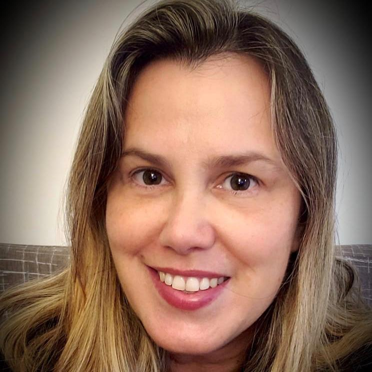 DANI REULE - É roteirista, atriz, jornalista, mestra em Comunicação e Informação e certificada pelo Professional Program in Writing for Television da UCLA. Escreveu a série ‘Baile de Máscaras’ (TV Cultura), o longa ‘Na Batalha’ (roteiro finalista do FRAPA 2017) e foi colaboradora do autor Marcílio Moraes na série ‘Pigmaleão do Brejo’ (Rede Record). Teve curtas de sua autoria apresentados em festivais nacionais e é criadora da sitcom 'Uma vida de Zenilde' (Tambellini Filmes). É membro da diretoria da Gedar e foi palestrante no VFX-Rio, na Semana do Audiovisual Primeiro Plano (Juiz de Fora), no Rio WebFest e no ROTA. É ainda professora na ABC Cursos de Cinema e no Instituto Infnet e ministrou cursos de roteiro na Escola de Cinema Darcy Ribeiro e na pós-graduação em Roteiro da FACHA, além de ter seu próprio curso de criação de série. Dani integra a mesa SALA DE ROTEIRO: O PROCESSO CRIATIVO, além de ser consultora do Lab.
-
ELIANA ALVES CRUZ
Convidada
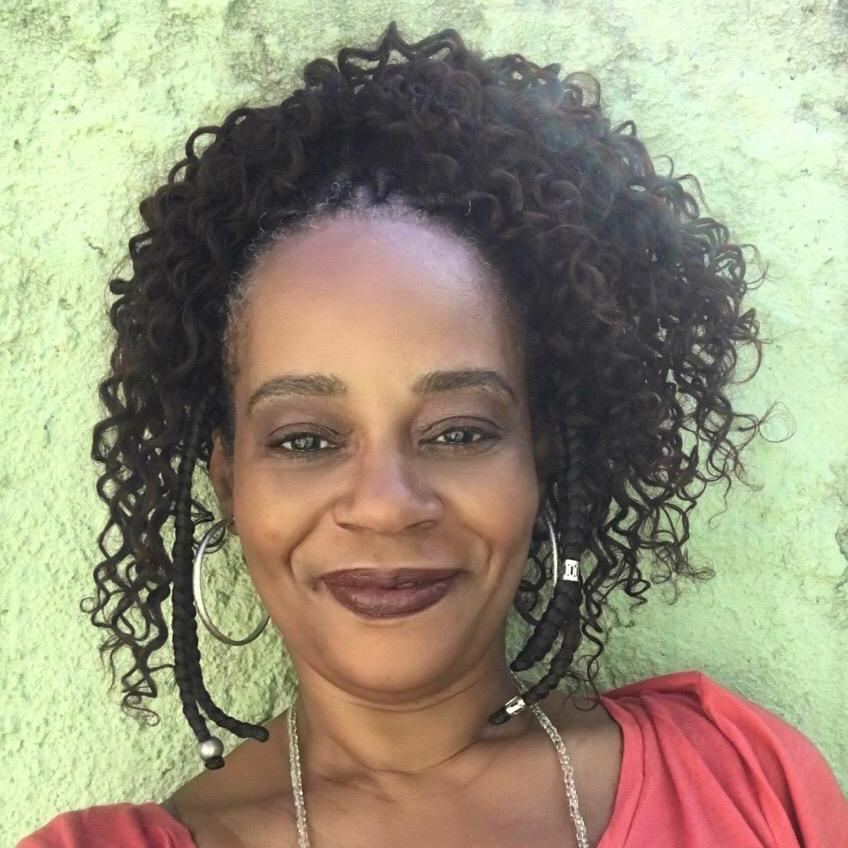 ELIANA ALVEZ CRUZ, carioca, escritora e jornalista (colunista do site UOL), pós graduada em comunicação empresarial. Seu romance de estreia, Água de barrela, conta sua trajetória familiar que começa na metade do século 19, na Nigéria, passa pelo convívio em um engenho açucareiro de Cachoeira/BA, atravessa todo o século 20 e vem parar na segunda década do século 21. Esta saga ganhou o Prêmio Oliveira Silveira de 2015, da Fundação Cultural Palmares/Ministério da Cultura e foi menção honrosa do Prêmio Thomas Skidmore 2018, do Arquivo Nacional e da universidade americana Brown University. Seu segundo romance, O crime do cais do Valongo, foi escolhido como um dos melhores do ano de 2018 pelos críticos do jornal O Globo e foi semifinal do Prêmio Oceanos 2019, mesmo ano em que publicou seu primeiro livro infantil, “A copa frondosa da Árvore”. Até o momento a autora está em mais cinco antologias de contos e uma de poesias. "Nada digo de ti, que em ti não veja", lançado em junho de 2020 pela Editora Pallas, tem sido muito bem recepcionado por público e crítica especializada. Eliana integra a mesa sobre adaptação.
-
FIDELYS FRAGA
Convidado
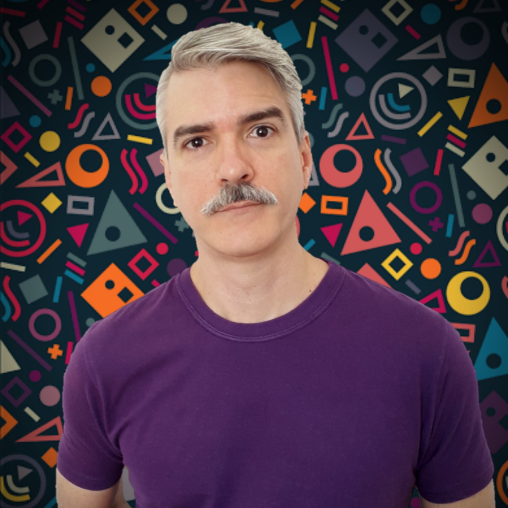 FIDELYS FRAGA - roteirista, dramaturgo e professor de roteiro, formado pela Escola de Cinema Darcy Ribeiro e licenciando pela UFF. Seus trabalhos mais recentes incluem a série doc Fronteiras Fluidas, exibida em 2020 no Canal Curta!, e as séries de ficção Arembepe, como roteirista chefe, e Baile de Máscaras, exibida em 2019 na TV Brasil, ambas para Giros Filmes. Também escreveu a série doc Roda de Choro em fase de finalização para o Canal Curta! Além é consultor do Lab e integra a mesa SALA DE ROTEIRO: O PROCESSO CRIATIVO.
-
FILIPPO CORDEIRO
Convidado
 Co-criador e apresentador do podcast sobre roteiro Primeiro Tratamento (www.primeirotratamento.com.br). Realizador do curta "Sinais", exibido em diversos festivais ao redor do mundo, finalista do concurso de roteiro de piloto de série do FRAPA 2018, semifinalista no concurso de roteiro de curta no ROTA 2018. Selecionado no laboratório do NPA - Núcleo de Projetos Audiovisuais de Curitiba 2020 com projeto de série. Participou de desenvolvimento nas produtoras Academia de Filmes, Indústria Imaginária, TERESA Filmes, ITMix. Escreveu para os programas do GNT, Multishow e Shoptime (É Shoptime!). Atualmente, escreve roteiros de branded content na produtora Primearte.
Co-criador e apresentador do podcast sobre roteiro Primeiro Tratamento (www.primeirotratamento.com.br). Realizador do curta "Sinais", exibido em diversos festivais ao redor do mundo, finalista do concurso de roteiro de piloto de série do FRAPA 2018, semifinalista no concurso de roteiro de curta no ROTA 2018. Selecionado no laboratório do NPA - Núcleo de Projetos Audiovisuais de Curitiba 2020 com projeto de série. Participou de desenvolvimento nas produtoras Academia de Filmes, Indústria Imaginária, TERESA Filmes, ITMix. Escreveu para os programas do GNT, Multishow e Shoptime (É Shoptime!). Atualmente, escreve roteiros de branded content na produtora Primearte.
-
GUSTAVO MORAES
Convidado
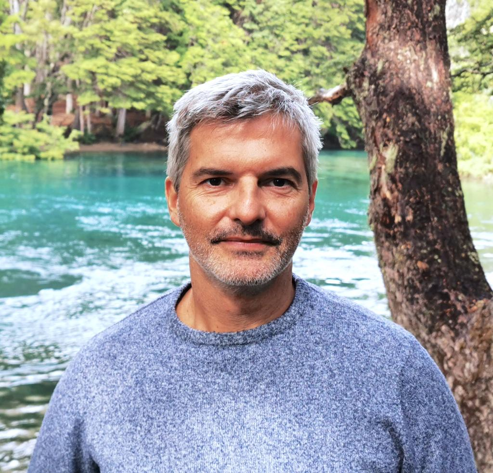 GUSTAVO MORAES - Mestre pela Columbia University nas áreas de produção e direção audiovisual. Como roteirista, participou dos laboratórios Binger Film Lab (Holanda), Produire au Sud-Festival 3 Continents (França) e do Laboratório SESC de Roteiros (Brasil). Moraes realiza filmes, documentários e publicidade. Leciona há mais de 10 anos nas áreas de roteiro, produção e direção. Atua também como consultor de roteiros e projetos audiovisuais. Foi consultor do longa-metragem Paraíso Perdido, de Monique Gardenberg, (2018) e roteirista do documentário Moda Sem Medida, de Vanessa Araújo para o Canal Fashion TV. Moraes integra a mesa SALA DE ROTEIRO: O PROCESSO CRIATIVO, além de ser consultor do Lab.
-
L. G. BAYÃO
Convidado
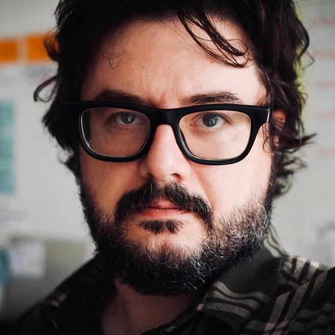 Escritor e roteirista, L.G. BAYÃO escreveu mais de vinte longas-metragens. Estreou no cinema com o curta de animação Roleta Russa (2002), escrito e dirigido por ele. Deu início à sua carreira no mercado de longas com o drama biográfico Heleno (2011), de José Henrique Fonseca, no qual colaborou no roteiro, e alçou fama nacional com Irmã Dulce (2014), de Vicente Amorim, que lhe rendeu uma indicação ao Grande Prêmio do Cinema Brasileiro. Estabeleceu seu nome como um dos grandes roteiristas de sua geração após escrever os elogiados Ponte Aérea (2015), de Julia Rezende, Motorrad (2016), de Vicente Amorim, O Shaolin do Sertão (2017), de Halder Gomes, e Minha Fama de Mau (2019), de Lui Farias. Bayão integra a mesa sobre adaptação.
-
LUIZ BERTAZZO
Convidado
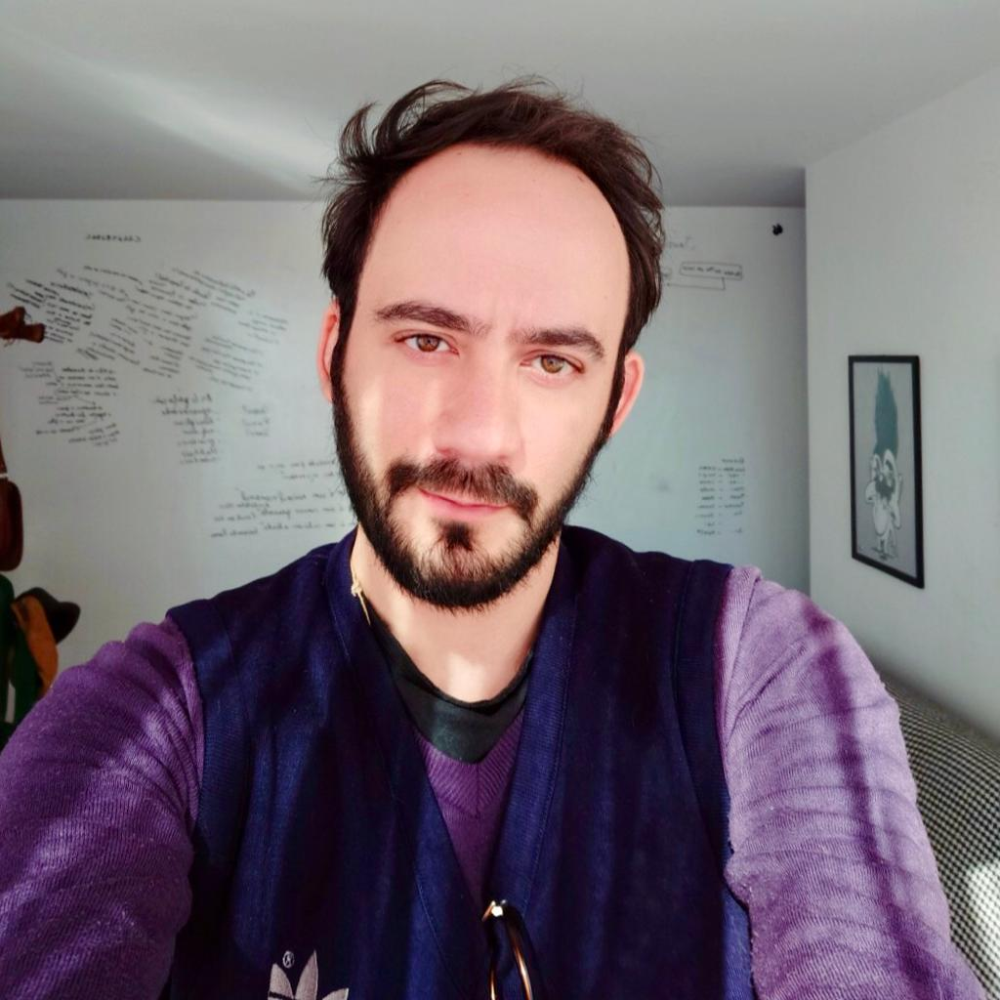 LUIZ BERTAZZO é ator e roteirista formado em interpretação no curso de Artes Cênicas da Faculdade de Artes do Paraná. Em 2020 completou 15 anos de carreira profissional. No Teatro atua junto à importantes companhias da cidade de Curitiba - Indicado 5 vezes ao Prêmio Gralha Azul de melhor ator do Estado do Paraná, já rodou as principais capitais do Brasil do Norte ao Sul junto à Cia Senhas de Teatro da qual faz parte desde 2005. Como ator no audiovisual já esteve em diversas produções, com destaque para a série Sob Pressão da Tv Globo, Irmandade da Netflix e o filme Nóis por Nóis, dirigido por Aly Muritiba e Jandir Santin. Desde 2012 dedica-se a escrita de roteiros, seu primeiro longa metragem "Alice Júnior" rodou os principais festivais nacionais (Festival de Brasília, Mix Brasil, Mostra SP, Festival do Rio) e internacionais ( Berlinale, Outfest, Frameline, NewFest) colecionando até o momento 17 prêmios. No momento aguarda a estreia do segundo longa rodado, "Casa Izabel" e está desenvolvendo dois novos longas "Os Cães lá de Fora" e "Loba", ambos desenvolvimentos subsidiados por editais do Fundo Setorial de Audiovisual - FSA. Bertazzo integra a mesa O PONTO DE VISTA DO ATOR ROTEIRISTA.
-
MICHEL BLOIS
Convidado
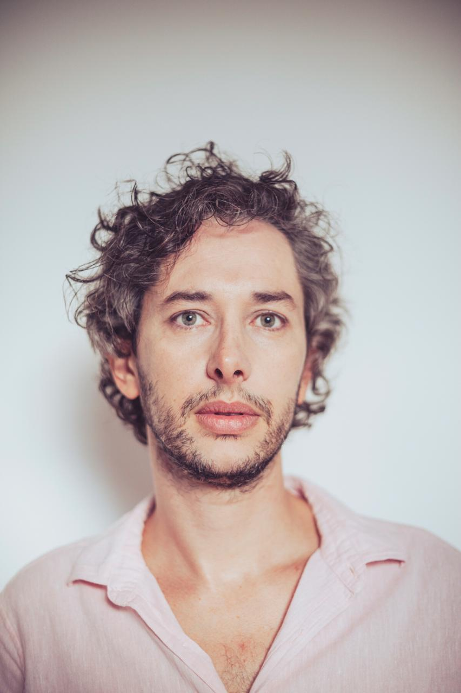 MICHEL BLOIS é ator, diretor e dramaturgo. Formou-se na CAL em 2006. Como ator fez mais de 40 peças e trabalhou com os diretores Felipe Hirsch, Enrique Diaz, Simon Will (UK), Lola Arias (AR), Tiago Rodrigues (PT), Jefferson Miranda, Ary Coslov, João Fonseca, Cesar Augusto, Victor Garcia Peralta entre outros. Como autor escreveu as peças “Para um destinatário” (apresentado em Portugal), “Dentro” da Pequena Orquestra e um dos textos de “Drive Thru Tropical” do Teatro Enlatado. E, em colaboração com outros artistas escreveu os espetáculos “Madrigal em processo” com a Pequena Orquestra, “Moradores da Cidade Vazia” com Alessandra Colasanti, Alonso Zerbinato, Joana Lerner, Keli Freitas e Pedroca Monteiro, “MoMO” com Flávia Gusmão (apresentado no Brasil, Europa e África), “Dulce” com Flávia Gusmão, Nuno Gil e Thiare Maia (apresentado no Brasil e Europa), “Sempre”, “Pedro procura Inez” e “Bobby Sands vai morrer, Thatcher assassina” com a companhia Mundo Perfeito (apresentados em Portugal) e “Tubarões” com Alexandre Varella, Alonso Zerbinato, Bianca Joy, Beatriz Bertu, Christian Landi, Cirillo Luna e Daniela Pereira de Carvalho. Atualmente é diretor e colaborador do canal feminista “Pulp Lu” de Maria Luisa Friese, co-roteirista do longa “Somente Amor” de Fernando Drummond e roteirista das séries “Ecila, Alice ao contrário” com Aline Fanju e Marcelo Grabowsky e “Romeu ComSorte”, que estão em fase de captação. Blois integra a mesa O PONTO DE VISTA DO ATOR ROTEIRISTA.
-
MICHEL CARVALHO
Convidado
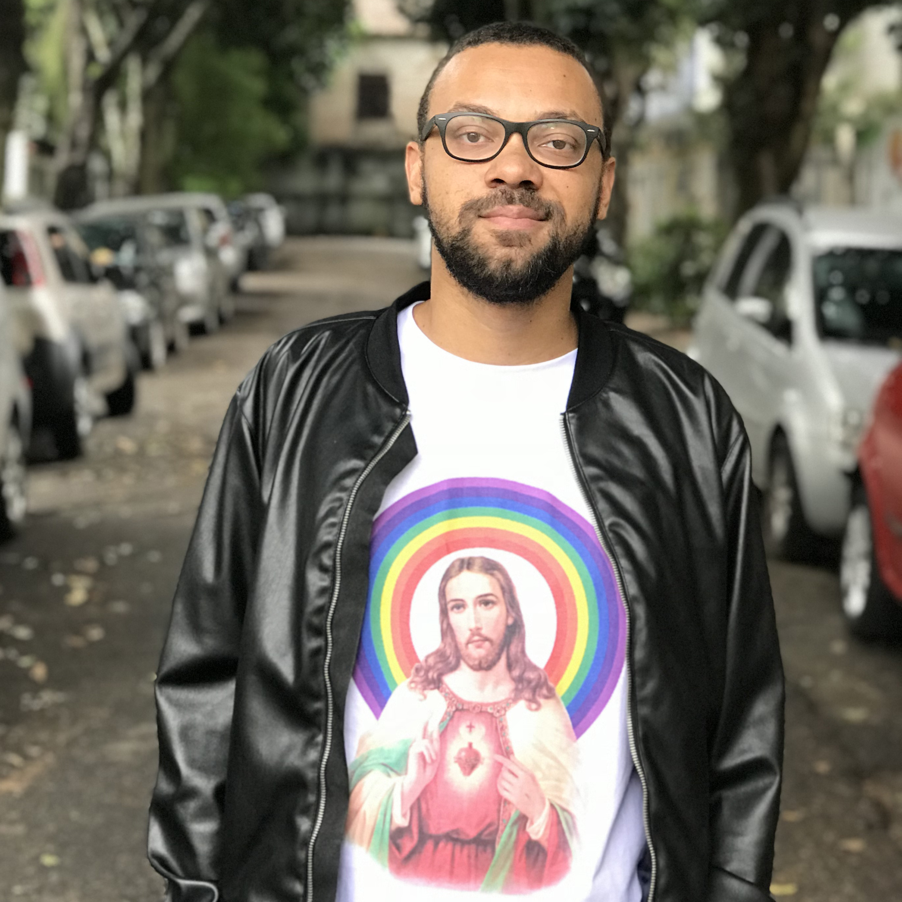 MICHEL CARVALHO - roteirista e antropólogo graduado, mestre e doutorando em Antropologia pela UFRJ, pesquisa questões relacionadas a gênero, raça e sexualidade no cinema. Estudou roteiro com Patrick Vanetti, diretor do Conservatório Europeu de Escrita Audiovisual, cursou a Oficina de Roteiristas e a Oficina de Escrita de Humor da Rede Globo de Televisão. Atuou como roteirista e pesquisador em mais de 10 produtos; onde se destacam as séries de ficção "Perrengue" (MTV), "Matches" (Warner Channel) e "Temporada de Verão" (Netflix); os longa-metragens documentais "Torre das Donzelas" (premiado como Melhor Filme nos festivais de Brasília, São Paulo, Rio de Janeiro, Uruguai e Portugal) e "Mussum - um filme do cacildis". Atualmente se dedica à escritura de seu longa ficcional "A Mais Forte", contemplado em edital do Ministério da Cultura, lança o documentário "Prazer em Conhecer", faz parte da equipe de roteiristas de uma das próximas novelas da Rede Globo e dá aulas de Cinema e Diversidade na Roteiraria e na AIC (Academia Internacional de Cinema). Carvalho integra a mesa PERSONAGENS QUE ATENDEM AOS NOVOS PADRÕES DE MASCULINIDADE.
-
MONICA SOLON
Convidada
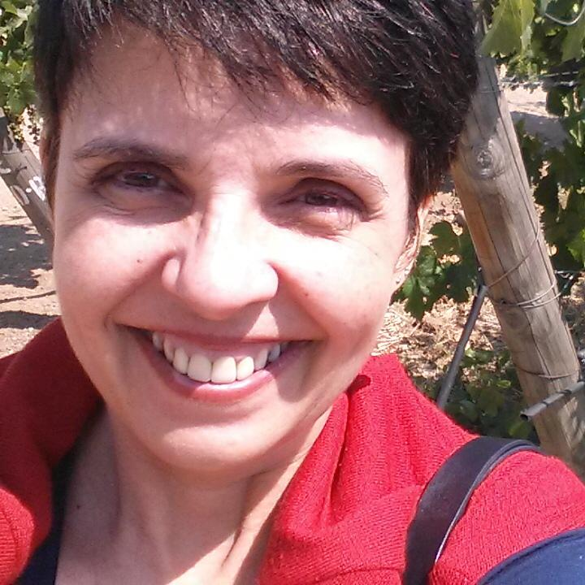 MONICA SOLON - É roteirista e escritora. Leciona o Roteiro Adaptado na Escola de Cinema Darcy Ribeiro e em cursos livres. Fez mestrado em Creative & Critical Writing com especialização em escrita, análise e desenvolvimento de roteiro na Inglaterra. É co-roteirista, com Steve Hawes, na adaptação para o cinema do romance A Girl Made of Dust, de Nathalie Abi-Ezzi, a ser dirigido por Hiam Abbass (2019/20). Participou da sala de roteiristas da série Baile de Máscaras (Produtora Giros), em exibição na TV Cultura. Desenvolveu e é roteirista nas séries Seeing in the Darkness e Youngsters, a serem produzidas pela produtora Talents Content (EUA). Sua proposta de adaptação para as telas do romance A Capitoa, de Bernadette Lyra, foi selecionado para o Cine Libri Workshop, com Linda Seger, a ser realizado na Bulgária, em outubro. Website: www.monicasolon.com. Monica integra a mesa SALA DE ROTEIRO: O PROCESSO CRIATIVO, além de ser consultora do Lab.
-
STÊFANO VOLP
Convidado
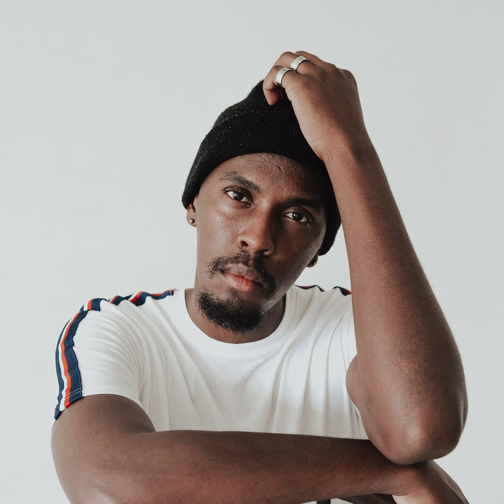 STEFANO VOLP é jornalista, roteirista e autor de 4 livros de ficção, incluindo Homens Pretos (Não) Choram, uma coleção de crônicas sobre masculinidades e negritudes. Participou do Laboratório de Narrativas Negras (Flup e Rede Globo) e Academia Internacional de Cinema. Além de roteirizar o média-metragem Proteja Os Seus Sonhos, um projeto audiovisual em parceria com a Som Livre, Volp atua como Publisher na Editora Escureceu, idealizando também um clube do livro para associados. Volp integra a mesa PERSONAGENS QUE ATENDEM AOS NOVOS PADRÕES DE MASCULINIDADE.
-
DAVID FRANÇA MENDES
Palestrante
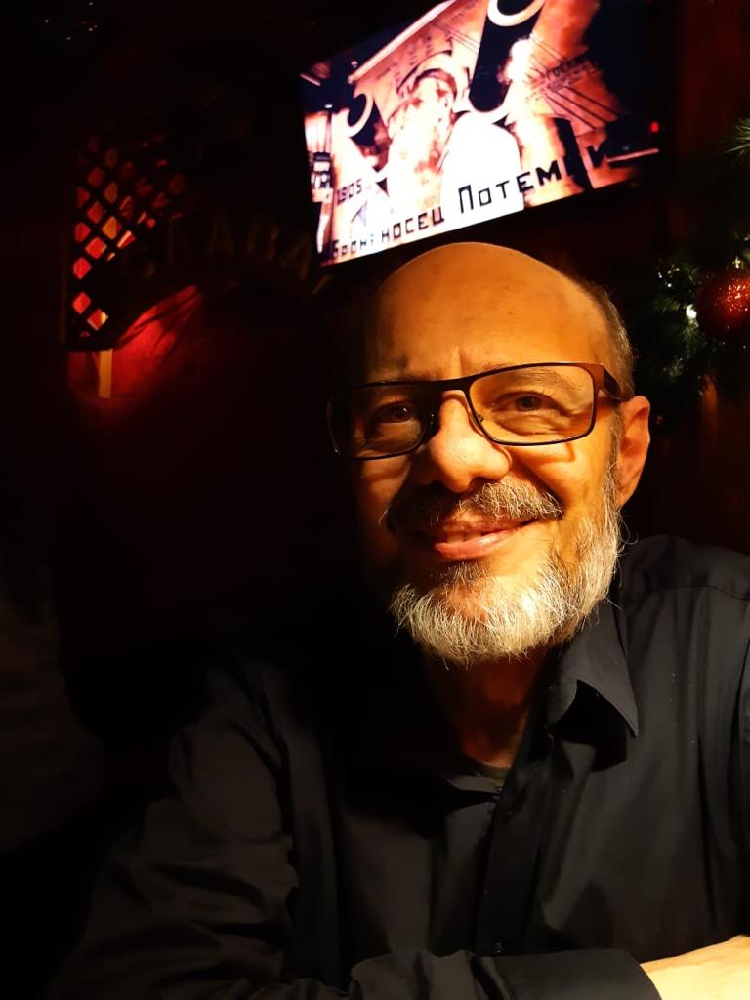 DAVID FRANÇA MENDES é autor-roteirista, diretor e showrunner. Nascido no Rio de Janeiro, vive desde 2019 entre São Paulo e Colônia, na Alemanha. Foi criador e head-writer das séries “A Garota da Moto”, “Quase Anônimos” e “Nós"”, supervisor de roteiro das seis temporadas de “Escola de Gênios”, e roteirista-chefe na Mixer, onde criou e desenvolveu projetos de séries, entre 2015 e 2019. Escreveu também longas-metragens (Corações Sujos, O Caminho das Nuvens, Um Romance de Geração, entre outros), documentários e programas de TV. É também escritor, autor do livro “O Herói Insone”, professor de roteiro e em 2019 estreou como autor teatral com a peça “Amor é Química”. Ganhador do Prêmio Especial de Cinema da ABL, do Grande Prêmio Cinema Brasil de Melhor Roteiro Adaptado, e de premiações e nominações em outros eventos brasileiros e internacionais, entre os quais o NHK-Sundance Latin America. Sua série “A Garota da Moto”, além de ter tido índices expressivos de audiência, foi finalista de todos os prêmios de televisão do Brasil em sua primeira temporada, incluindo o importante prêmio APCA. David dará a Masterclass com o tema O FETICHE DA ESTRUTURA - UMA PROVOCAÇÃO.
-
IAN LEITE
Palestrante
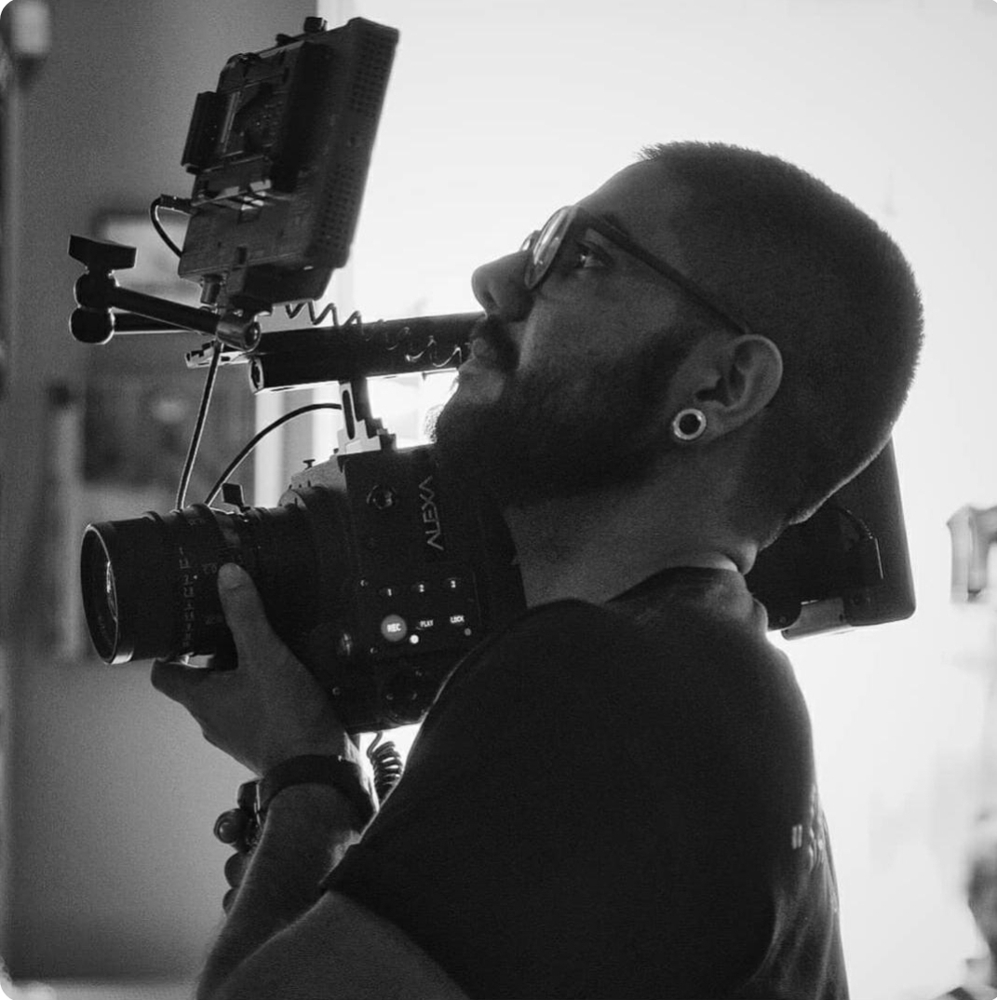 Ian é um dos sócios da Monstro Filmes e atua como diretor e diretor de fotografia em diversos projetos, de publicidade e branded content a documentários e clipes musicais. Teve a oportunidade dirigir dois documentários sobre gênero, o "Precisamos Falar Com os Homens?" para a ONU Mulheres do Brasil e o "Silêncio dos Homens", lançado em 2019 e com mais de 1 milhão de visualizações no Youtube. Está sempre atrás de boas histórias e disposto a novos desafios.
-
KARINE TELES
Palestrante
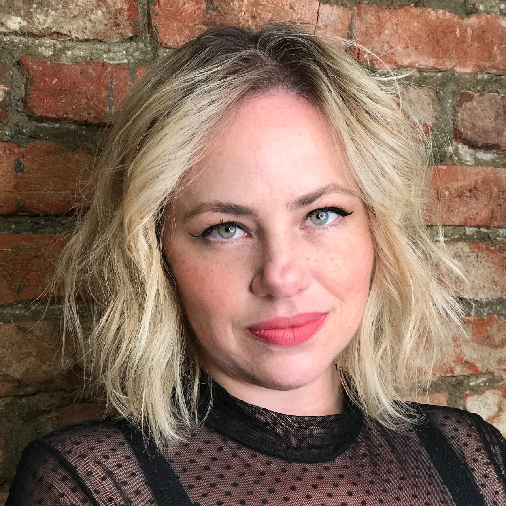 Formada pela UNIRIO com 27 anos de carreira, plena de indicações e prêmios, entre eles: “Riscado”, de Gustavo Pizzi – melhor atriz no Festival do Rio, Gramado, Melhores do Ano CineSesc, “Que horas ela volta”, de Ana Muylaert - indicada a melhor atriz coadjuvante no Grande Prêmio do Cinema Brasileiro, "Ao Lado" de Felipe Sholl -melhor atriz no Festival do Rio, "Benzinho", co-escrito com Gustavo Pizzi - atuação e de roteiro no G. P. do Cinema Brasileiro, Sesc melhores do Ano, Gramado, entre outros. Karine está no elenco de Bacurau, de Kleber Mendonça e Juliano Dornelles - Vencedor do Premio do Júri no Festival de Cannes. É coautora e protagonista da série "Gilda", que estreia em 2020 no Canal Brasil. Em teatro atuou em “A Gaivota”, de Tchecov, dir. Bruno Siniscalchi, “Do Tamanho do Mundo”, dir Jefferson Miranda. Idealizou e atuou no projeto “Carne”, hibrido entre teatro e artes plásticas (CCBB Rio). "O Branco dos seus Olhos" dir por Alexandre Mello, "Os Últimos Dias de Gilda" Dir. Camilo Pellegrini. Na TV foi Sumara de A Regra do Jogo, Madame Dechireé em Filhos da Pátria, Odete em Tempo de Amar. Regina, em Malhação e Lolita Rodrigues na mini série/filme Hebe.
-
LUÍZA OLIVEIRA
Palestrante
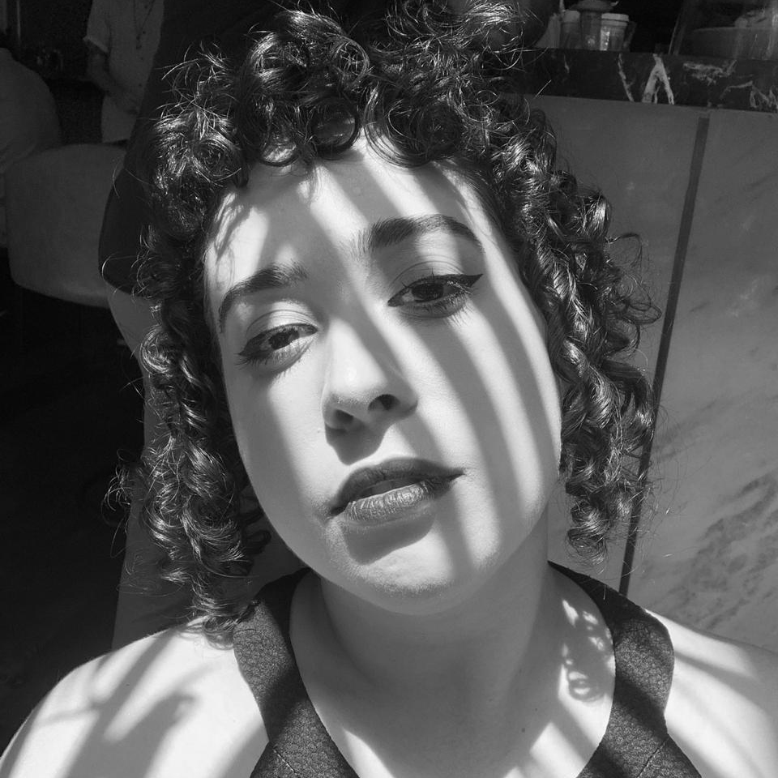 Especialista em correção de cor (ou color grading), finalizo campanhas publicitárias, documentários e branded content para marcas como O Boticário, Natura e Instituto Unibanco.
Sou responsável pelo canal Comum.vc no Youtube, mas também administrei canais como Papo de Homem, A Costureirinha, entre outros.
Como diretora, foco em projetos relacionados a temas sociais, especialmente feministas. -
MARTON OLYMPIO
Palestrante
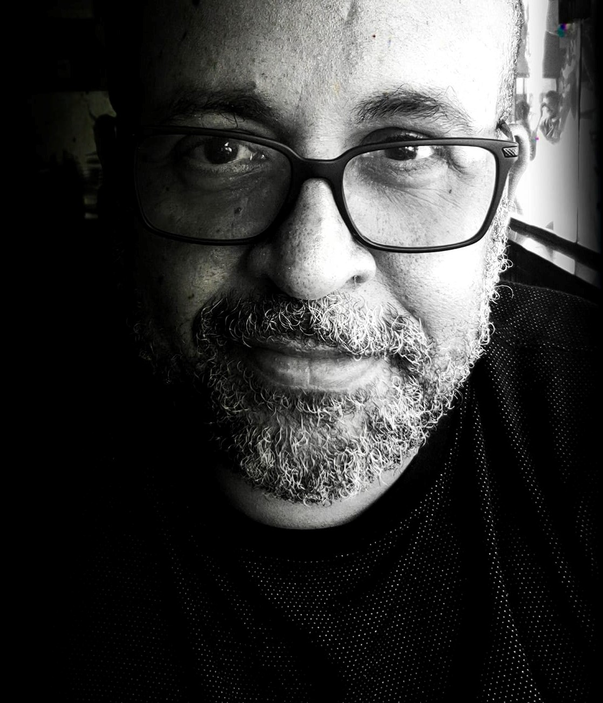 Marton Olympio é diretor e roteirista, sendo o autor da última temporada de Cidade dos Homens (2018), colaborador da série Rio Negro (2019) e um dos novos autores da série Os Experientes (2020), todas para a TV Globo. Escreveu o roteiro do filme Sequestro Relâmpago (2018 - Globo Filmes) e o longa Alemão 2 (2020 - RT Feautures), continuação do filme de 2016. Em 2018 dirigiu e escreveu a série A Dona da Banca (2021), para o Cine Brasil TV. Em 2011 foi um dos selecionados para o Laboratório Internacional de Roteiros do BoliviaLab, em Cochabamba na Bolívia, e em 2012 escreveu e dirigiu o piloto do seriado Paixão Futebol Clube. No ano de 2013 foi finalista, com o seriado Perdidos, do Programa Globosat de Roteiristas , recebendo scriptdoctoring com Marta Kauffman (Friends), Barry Schkolnick (The Good Wife) e Dan Halsted. Começou sua carreira em dramaturgia para TV em 2010 com a Série Musas, Canal Brasil, 26 programas escritos e dirigidos por ele. Depois foi roteirista do seriado Natália – Nota 10 em drama na coluna de TV do Jornal O Globo - da TV Brasil, hoje exibido pelo Sony Spin e Universal. Em 2014 e 2015 foi um dos autores do seriado As Canalhas – Melhor Programa de TV segundo a Revista Veja e Finalista do Prêmio Contigo de TV - para a GNT. Em 2015 foi roteirista do seriado Santo Forte – Prêmio Telas de Melhor Série de Ficção - para a Moonshot/AXN, a série Jungle Pilot, Giros/Universal. Em 2016 foi o redator final do seriado Prata da Casa(FOX) finalista do Prémio Fénix no México e Natália (2 temporada - 2018). Há três anos é tutor no Flup Narrativas Negras, abrindo espaço para novos autores e roteiristas negros no Brasil. Em 2019 escreveu e dirigiu o seriado A Dona Da Banca (Cine Brasil TV) e em 2020, escreveu o novo clipe de Baco Exu do Blues, “Bacanal” . Hoje está de volta à Rede Globo de Televisão.
-
RAPHAEL MONTES
Palestrante
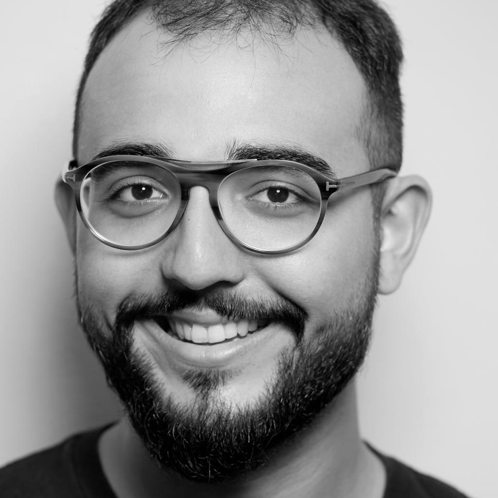 Raphael Montes nasceu em 1990, no Rio de Janeiro. É criador, roteirista chefe e produtor-executivo da série Bom Dia, Verônica na Netflix. Escreveu os romances Suicidas, Dias Perfeitos, O Vilarejo, Jantar Secreto e Uma Mulher No Escuro, sucessos de público e de crítica, traduzidos em mais de 20 países e com os direitos de adaptação vendidos para o cinema. Além disso, Raphael escreve roteiros de cinema, como Praça Paris, A Menina Que Matou Os Pais, O Menino Que Matou Meus Pais, e assina uma coluna quinzenal na revista Veja.
-
RICARDO TIEZZI
Palestrante
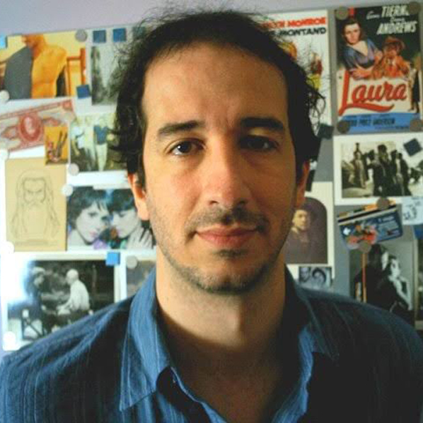 Ricardo Tiezzi é escritor e professor. Escreveu o roteiro dos filmes Superpai e Qualquer Gato Vira Lata. Foi roteirista de O Outro Lado do Paraíso, filme vencedor do prêmio do Júri Popular no Festival de Gramado 2015 e Melhor Filme no júri popular de estudantes no Festival Latino Americano de Trieste. Em televisão, trabalhou como roteirista em quatro temporadas do programa Malhação, na TV Globo, a última indicada ao prêmio Emmy Kids. Escreveu as séries Julie e os Fantasmas (Band/Nickelodeon) – vencedora do prêmio APCA e indicada ao Emmy Internacional – Agora Sim (Mixer / Sony), indicada ao prêmio APCA de melhor série, A Vida de Rafinha Bastos (Fox), Mothern (GNT), Mano a Mano (Rede TV) e o telefilme Amor ao Quadrado, especial de Natal na Globo. Foi roteirista da animação Sítio do Picapau Amarelo, na Globo, e da novela infantil Floribella, na Band. Roteirizou ainda os programas de filosofia Peripatético e Café Filosófico (Cultura). Seu trabalho de consultoria inclui trabalhos para o edital FICTV, do MinC, que gerou três séries veiculadas na TV Brasil, para o filme Tainá 3 e para o seriado Sapore D’Itália (RGB / Globo). Foi júri e consultor das três edições do concurso NetLab, de seleção e desenvolvimento de séries para a tv paga, e júri de editais da prefeitura e do estado de SP. Participou de pitching para a seleção de seriados para a TV Cultura. É consultor, professor e autor de roteiro do programa Apro/Sebrae para a capacitação de produtoras médias e pequenas em território nacional. Como professor, ministra oficinas de narrativa audiovisual na Roteiraria. Ministrou também cursos semestrais no Centro Cultura Barco e na Academia Internacional de Cinema – AIC. É professor da pós-graduação em Roteiro para Cinema e Televisão da FAAP e em Escrita Criativa pela mesma instituição. Ministrou aulas de narrativa e storytelling para empresas como Almap e Editora Globo. Especialista em História da Arte pela FAAP, com monografia sobre as poéticas de Tchekhov e Cortázar.
-
SILVIO TENDLER
Palestrante
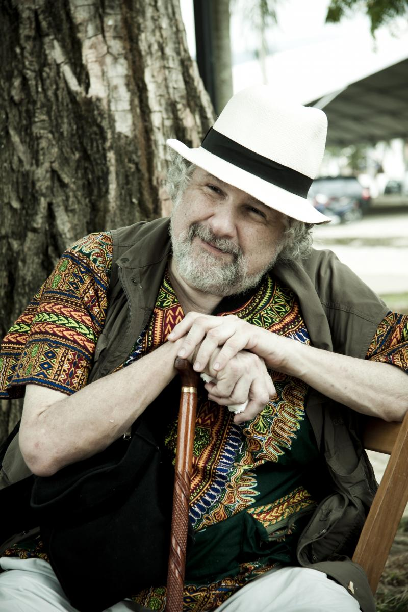 Silvio Tendler iniciou sua trajetória no cinema através do Movimento Cineclubista, em meados dos anos sessenta. Possui as três maiores bilheterias do documentário brasileiro (“Os anos JK – Uma trajetória política”, “O Mundo Mágico dos Trapalhões” e “Jango”) e mais de sessenta prêmios, dentre eles seis Margaridas de Prata – C.N.B.B e o Prêmio Salvador Allende no Festival de Trieste, Itália, pelo conjunto da obra. Atuou como Assistente de Direção de Paulo Alberto de Barros – posteriormente conhecido como Artur da Távora – no curta-metragem “Fantasia para ator e TV”, e realizou seu primeiro filme, sobre a Revolta da Chibata. Em 1980, lança o filme “Os anos JK – Uma trajetória política”. Em 1981, dirige o filme “O Mundo Mágico dos Trapalhões”, realizado pela Renato Aragão Produções. No mesmo ano inicia o desenvolvimento do longa-metragem “Jango”, sobre a carreira política de João Belchior Marques Goulart, presidente deposto pelos militares em 1º de abril de 1964 e cria a Caliban Produções Cinematográficas.
-
ALESSANDRA PAJOLLA
Mediador
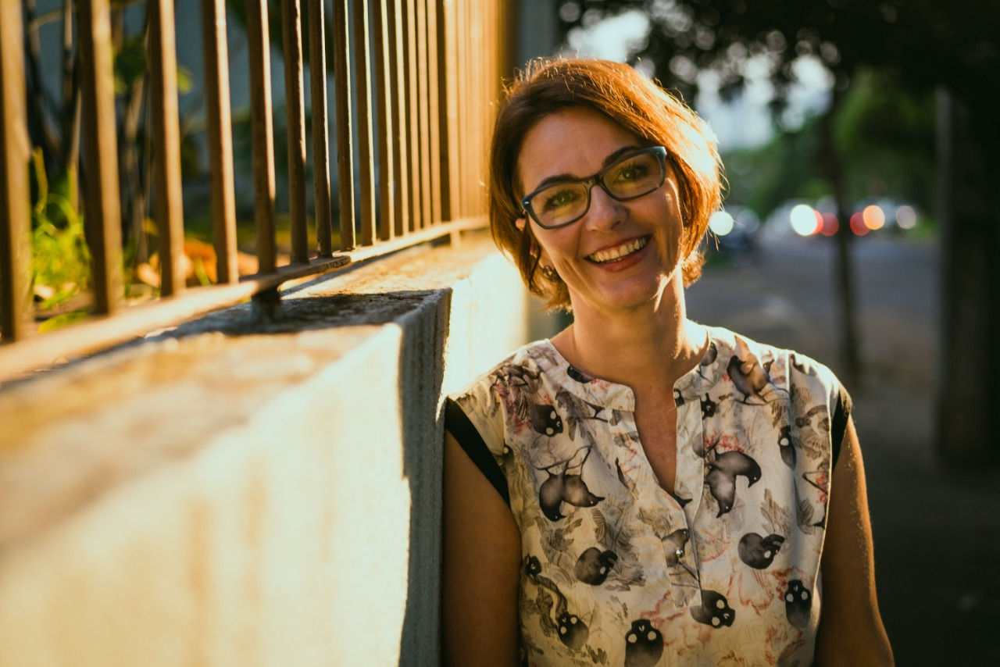 ALESSANDRA PAJOLLA é formada em jornalismo (UEL), especialista em Criação e Produção para Audiovisual (Pitágoras) e doutora em Estudos Literários (UEM). Obteve segundo lugar no Prêmio Cabíria 2019, com o piloto da série “O Silêncio das Flores”, escrita em parceria com Renata Lago. A série também foi finalista do Frapa 2019 e selecionada pelo Núcleo de Produções Audiovisuais (NPA) de Curitiba, em 2019, recebendo consultoria de Daniel Tavares e Jessica Candal. Escreveu e dirigiu o curta-metragem “Redenção”, produzido com recursos do edital 004/2017 – Seec/PR e Ancine, que estreou em outubro de 2019 na Cinemateca do MAM/RJ, como parte do III ROTA. Escreveu e foi assistente de direção do curta-metragem “Inventário”, estrelado por Adriano Garib e vencedor do prêmio de Curta-Metragem (Drama) no CreationInternationalFilm Festival (2019/Apple Valley/Califórnia), produzido com recursos edital 004/2017 – Seec/PR e Ancine. Escreveu o projeto de série “Histórias do Busão”, selecionado pelo Curitiba Lab Sesi/Olhar de Cinema, em 2017, recebendo consultoria de Aly Muritiba, Leo Garcia, Ana Johann e Leandro Saraiva. Foi assistente de roteiro da série infantil Super Família (FSA/TVs Públicas), exibida em 2019 na TV Cultura, escrevendo oito episódios. Escreveu também o projeto de série “Na Batalha”, finalista do Laboratório de Projetos de Séries do III ROTA, realizado no Rio de Janeiro, em 2019. Em 2020, está dirigindo o curta-metragem “Cinza que te Quero Cor”, de sua autoria, aprovado no edital 006/2018 do Promic Londrina/PR, que aborda o universo hip hop. Alessandra é a mediadora da mesa sobre adaptação.
-
DANIEL JABER
Mediador
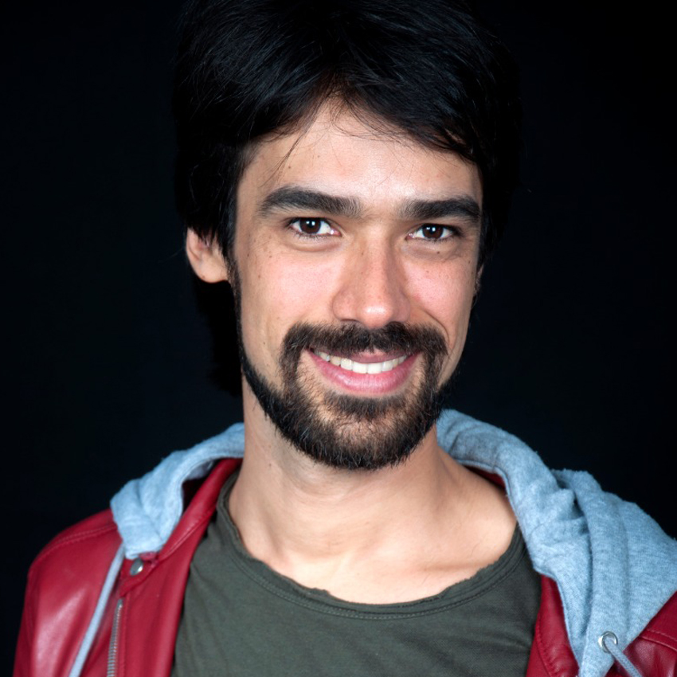 DANIEL JABER – Formado pela UFMG e co-fundador da Cardume, streaming dedicado exclusivamente a filmes brasileiros, é também ator e bailarino. Na Cardume integra a equipe de gerência da curadoria e é também mediador das sessões de cinema online com debate. Como ator já trabalhou com nomes como Marcelo Caetano, Elza Cataldo, Ricardo Alves Jr, entre outros. Nos últimos anos, além do constante estudo na atuação, dedica-se também ao estudo de roteiros audiovisuais. Em 2020 foi integrante do júri de longas metragens no Festival de Cinema de Gramado. Daniel fará a mediação da mesa PERSONAGENS QUE ATENDEM AOS NOVOS PADRÕES DE MASCULINIDADE juntamente com Luciana Damasceno. E o CARDUME, plataforma de streaming criada por ambos, é nosso mais novo parceiro e irá presentear um vencedor do ROTA com uma premiação especial.
-
FILIPPO CORDEIRO
Mediador
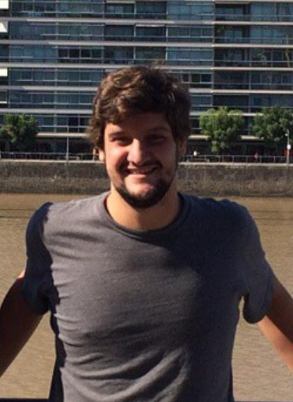 Co-criador e apresentador do podcast sobre roteiro Primeiro Tratamento (www.primeirotratamento.com.br). Realizador do curta "Sinais", exibido em diversos festivais ao redor do mundo, finalista do concurso de roteiro de piloto de série do FRAPA 2018, semifinalista no concurso de roteiro de curta no ROTA 2018. Selecionado no laboratório do NPA - Núcleo de Projetos Audiovisuais de Curitiba 2020 com projeto de série. Participou de desenvolvimento nas produtoras Academia de Filmes, Indústria Imaginária, TERESA Filmes, ITMix.
Escreveu para os programas do GNT, Multishow e Shoptime (É Shoptime!). Atualmente, escreve roteiros de branded content na produtora Primearte. -
LUCIANA DAMASCENO
Mediador
 LUCIANA DAMASCENO - roteirista, atriz, coreógrafa e professora, formada pelo Palácio das Artes/BH. Co-fundadora e sócia da Cardume, streaming que visa fomentar e difundir o mercado para curtas-metragens brasileiros. Mediadora e apresentadora no programa Sessão de Cinema Online com Debate da Cardume. Foi integrante da curadoria do Prêmio Cabíria 2019 e 2020. Co-fundadora do grupo de estudos para roteiro de audiovisual “Filme Pingado”, da Trama cia. de dança e da produtora Fuskazul Filmes. Luciana media a mesa PERSONAGENS QUE ATENDEM AOS NOVOS PADRÕES DE MASCULINIDADE, juntamente com Daniel Jaber. E o CARDUME, plataforma de streaming, é nosso mais novo parceiro, e vai presentear um vencedor do ROTA com uma premiação especial.
LUCIANA DAMASCENO - roteirista, atriz, coreógrafa e professora, formada pelo Palácio das Artes/BH. Co-fundadora e sócia da Cardume, streaming que visa fomentar e difundir o mercado para curtas-metragens brasileiros. Mediadora e apresentadora no programa Sessão de Cinema Online com Debate da Cardume. Foi integrante da curadoria do Prêmio Cabíria 2019 e 2020. Co-fundadora do grupo de estudos para roteiro de audiovisual “Filme Pingado”, da Trama cia. de dança e da produtora Fuskazul Filmes. Luciana media a mesa PERSONAGENS QUE ATENDEM AOS NOVOS PADRÕES DE MASCULINIDADE, juntamente com Daniel Jaber. E o CARDUME, plataforma de streaming, é nosso mais novo parceiro, e vai presentear um vencedor do ROTA com uma premiação especial.
-
MÁRCIA DO VALLE
Mediador
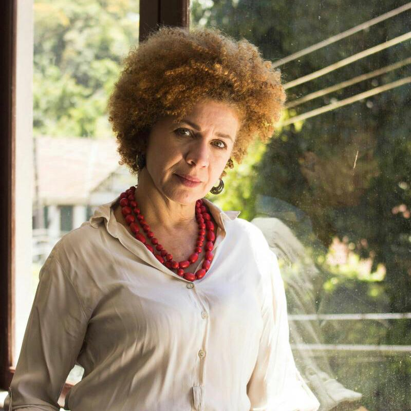 Atriz, Diretora e Produtora de Teatro. Em 34 anos de ofício, atuou sob a direção de Aderbal Freire Filho, Amir Haddad, André Paes Leme, Antonio Pedro Borges, Domingos Oliveira, Dudu Sandroni, Eduardo Tolentino de Araújo, Luis Arthur Nunes, Lucia Coelho, Nelson Rodrigues Filho, Paulo Betti, Stephane Brodt e Renato Farias. Na TV Globo, participou de novelas, minisséries e programas. Em Cinema, fez o longa metragem “Vende-se essa moto”, de Marcus Faustini, produção Cavi Borges, prêmio especial do júri no Festival do Rio 2017; além dos curtas “Asfixia”, de Roberval Duarte; “Comportamento Humano” de Flavio Leandro de Souza e Jucá, de Lucas Magalhães. Produziu seu primeiro solo teatral 'Um Ato!", além de outros espetáculos. Dirigiu recentemente, o monólogo Lima entre nós, homenagem ao escritor Lima Barreto, com o ator Leandro Santana, indicado ao prêmio Shell; o show Mona canta Dalva, homenagem ao centenário da cantora Dalva de Oliveira além do roteiro de Mona canta Linda, homenageando o centenário da rainha do rádio Linda Batista, direção Vilma Melo. Foi professora da CAL e Escola Martins Pena, Escolas de Teatro no RJ. Foi coordenadora do pioneiro Ciclo de Leituras Dramatizadas da Casa da Gávea, no RJ. É preparadora de atores iniciantes e profissionais, dá aulas, dirige, atua e produz novos projetos. Para assistir: - @umatoteatro (facebook), https://vimeo.com/462189706 (book), www.youtube.com/channel/UCbCd-RhLIUKUz3Lok9lhShA (projeto “Agora já era”, realizado na quarentena/2020, vídeo: “Lésbica, eu?”), https://vimeo.com/216894761 (longa metragem “Vende-se essa moto” - 2017), https://www.youtube.com/watch?v=pQh9qCuLTuI (espetáculo solo “Um Ato!” - 2016), www.cicloguarnieri.com (homenagem ao ator e dramaturgo Gianfrancesco Guarnieri, na Casa da Gávea RJ - 2012).
-
MARINA MARTINS
Mediador
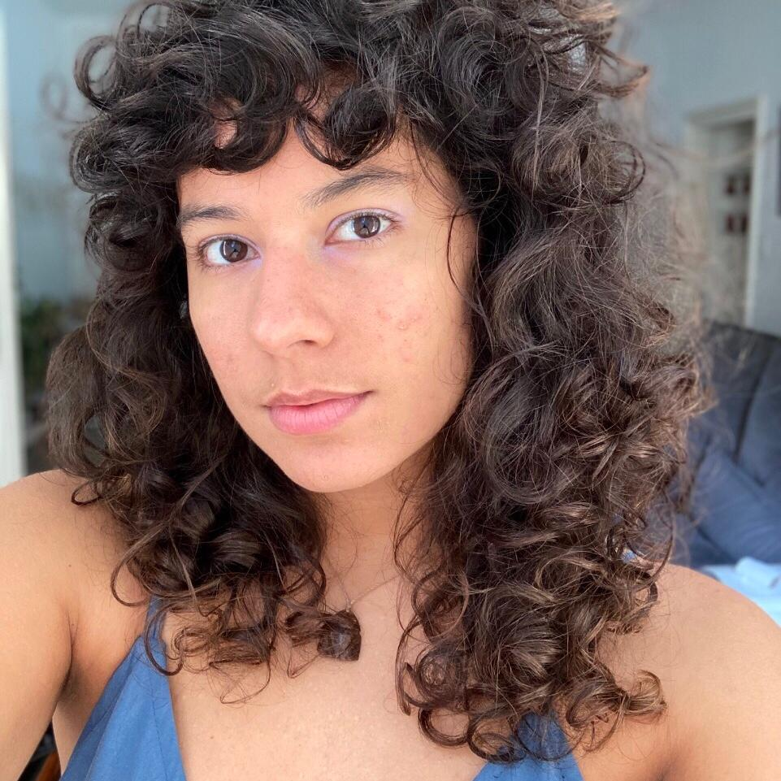 Marina Martins é cineasta, roteirista, escritora e fotógrafa. Mestra em Cinema pela Université Panthéon-Sorbonne e formada em Cinema pela PUC-Rio. Atualmente, é assistente de roteiro de uma série de ficção na Conspiração Filmes. Foi assistente de direção e roteiro na TvZero e trabalhou nos Festivais de Cannes (2018) e do Rio (2019). Criou e dirige o projeto Corpo Cru, onde, a partir de depoimentos e fotos, coloca em questão a relação das pessoas com seus corpos diante dos padrões sociais.